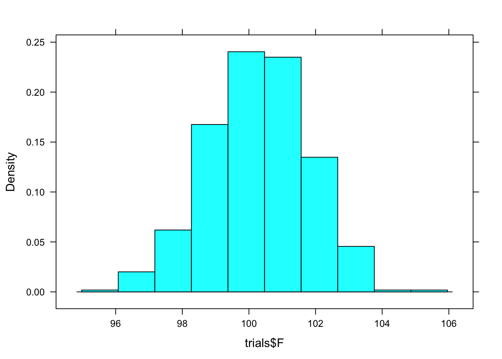

Chapter 5 Confidence intervals
Again, you will need the mosaic package in R, which provides some of the basic operators for constructing sampling and resampling distributions.
require(mosaic)The examples will be based on the Cherry-Blossom 2008 data described earlier:
Runners = read.csv("http://tiny.cc/mosaic/Cherry-Blossom-2008.csv")
names( Runners )## [1] "position" "division" "total" "name" "age" "place" "net" "gun"
## [9] "sex"5.1 Finding a Sampling Distribution through Bootstrapping
Your data are typically a sample from a population. Collecting the sample is usually hard work. Just to illustrate the context of a sampling distribution, here is a simulation of selecting a sample of size \(n=100\) from the population of runners. It’s essential to keep in mind that you do not usually pull out your sample using the computer in this way. Instead, you go into the field or laboratory and collect your data.
Mysamp = deal( Runners, 100 ) # A Simulation of samplingNow that you have a sample, you can calculate the sample statistic that’s of interest to you. For instance:
mean( gun ~ sex, data = Mysamp )## F M
## 100.20606 90.88333Note that the results are slightly different from those found above using the whole population. That’s to be expected, since the sample is just a random part of the population. But ordinarily, you will not know what the population values are; all you have to work with is your sample.
Theoretically, the sampling distribution reflects the variation from one randomly dealt sample to another, where each sample is taken from the population. In practice, your only ready access to the population is through your sample. So, to simulate the process of random sampling, re-sampling is used and the re-sampling distribution is used as a convenient approximation to the sampling distribution.
Re-sampling involves drawing from the set of cases in your sample with replacement. To illustrate, consider this example of a very small, simple set: the numbers 1 to 5:
nums = c(1,2,3,4,5)
nums## [1] 1 2 3 4 5Each resample of size \(n\) consists of \(n\) members from the set, but in any one resample each member might appear more than once and some might not appear at all. Here are three different resamples from nums:
resample(nums)## [1] 3 1 3 1 3resample(nums)## [1] 4 3 5 4 3resample(nums)## [1] 3 2 1 2 3To use resampling to estimate the sampling distribution of a statistic, you apply the calculation of the statistic to a resampled version of your sample. For instance, here are the group-wise means from one resample of the running sample:
mean( gun ~ sex, data = resample(Mysamp) )## F M
## 99.45656 89.98291And here is another:
mean( gun ~ sex, data = resample(Mysamp) )## F M
## 101.67719 90.89845The bootstrap procedure involves conducting many such trials and examining the variation from one trial to the next.
The do() function lets you automate the collection of multiple trials. For instance, here are five trials carried out using do():
do(5) * mean( gun ~ sex, data = resample(Mysamp) )## F M
## 1 100.0438 89.75081
## 2 100.8766 93.90732
## 3 100.7636 93.49943
## 4 101.2549 92.48796
## 5 100.3470 94.47237Typically, you will use several hundred trials for bootstrapping. The most common way to summarize the variation in bootstrap trials, you can calculate a coverage interval. (When applied to a sampling distribution, the coverage interval is called a confidence interval.)
To do the computation, give a name to the results of the repeated bootstrap trials, here it’s called trials:
trials = do(500) * mean( gun ~ sex, data = resample(Mysamp) )
head(trials)## F M
## 1 100.8126 92.91923
## 2 100.0116 89.11071
## 3 100.9795 88.42286
## 4 101.6498 95.82644
## 5 103.3579 88.95704
## 6 101.7951 88.94905Computing the coverage intervals can be done using qdata() on the columns, or, for convenience, use the confint() function.
confint(trials)## name lower upper level method estimate
## 1 F 97.24245 103.13737 0.95 percentile 100.20606
## 2 M 86.59421 96.22077 0.95 percentile 90.88333To get a visual depiction of the sampling distribution, look at a histogram of Female mean gun time from the resamapled data.
histogram(trials$F)
Verify that the confidence interval for females calculated by confint() is the 95% coverage interval of trials$F as seen in the histogram.
The idea of sampling distributions is based on drawing at random from the population, not resampling. Ordinarily, you can’t do this calculation since you don’t have the population at hand. But in this example, we happen to have the data for all runners. Here’s the population-based confidence interval for the mean running time, with sample size \(n=100\), broken down by sex:
trials = do(500) * mean( gun ~ sex, data = deal(Runners, 100) )
confint(trials)## name lower upper level method estimate
## 1 F 94.75541 102.35947 0.95 percentile 99.34655
## 2 M 84.40595 92.47707 0.95 percentile 86.19722The output of confint() shows the lower and upper limits of the confidence interval for each of the groups. The labels on the columns indicate the confidence level. By default, the interval is at the 95% level, and so the interval runs from the 2.5 percentile to the 97.5 percentile.
Historically, statisticians have been concerned with very small samples: say \(n=2\) or \(n=3\). Even in this era of huge data sets, such small sample sizes often are encountered in laboratory experiments, etc. Bootstrapping cannot work well with such small samples, and other techniques are needed to simulate sampling variability. Many of these techniques are based in algebra and probability theory, and give somewhat complex formulas for calculating confidence intervals from data. The formulas are often found in textbooks, but for most of the modeling techniques you will use in later chapters, appropriate formulas for confidence intervals have been implemented in software. For other modeling techniques, bootstrapping is used to find the confidence intervals. But keep in mind that bootstrapping can only be effective when the sample size \(n\) is one or two dozen or larger.
5.2 Computing Grade-Point Averages
The grade-point average is a kind of group-wise mean, where the group is an individual student. This is not the usual way of looking at things for a student, who sees only his or her own grades. But institutions have data on many students.
The data files grades.csv and courses.csv are drawn from an institutional database at a college. They give the grades for more than 400 students who graduated in year 2005. Another file, grade-to-number.csv, gives the rules used by the institution in converting letter grades to numbers.
The data files are part of a relational data base, a very important way of managing large amounts of data used by private and public institutions, corporations and governments — it’s the basis for a multi-billion dollar segment of the economy. Ordinarily, relational data bases are queried using special-purpose computer languages that sort, extract, and combine the data. Here are the R commands for converting the letter grades to numbers and extracting the data for one student:
Grades = read.csv("http://tiny.cc/mosaic/grades.csv")
gp = read.csv("http://tiny.cc/mosaic/grade-to-number.csv")
all.students = merge(Grades, gp)
one.student = subset( all.students, sid=="S31509" )
one.student## grade sid sessionID gradepoint
## 192 A S31509 session3443 4.00
## 543 A S31509 session2308 4.00
## 674 A S31509 session2851 4.00
## 1280 A S31509 session2737 4.00
## 1389 A S31509 session2585 4.00
## 1932 A- S31509 session2213 3.66
## 2666 A- S31509 session2562 3.66
## 4427 B+ S31509 session1959 3.33
## 4438 B+ S31509 session3036 3.33
## 5101 B+ S31509 session2928 3.33
## 5387 C+ S31509 session2344 2.33
## 5679 S S31509 session2764 NA
## 5902 S S31509 session2493 NACalculating the mean grade-point for the one student is a simple matter:
mean( ~ gradepoint, data=one.student )## [1] NAIt’s equally straightforward to calculate the grade-point averages for all students as individuals:
GPAs <- mean( gradepoint ~ sid, data=all.students )
head(GPAs)## S31185 S31188 S31191 S31194 S31197 S31200
## 2.412500 NA NA 3.359167 3.356154 2.186429Bootstrapping can be used to find the confidence interval on the grade-point average for each student:
trials = do(100)*mean( ~ gradepoint, data=resample(one.student), na.rm = TRUE )The na.rm = TRUE argument tells the mean function to exclude sampled grades of NA which are incompletes, withdrawls and audits on the student’s record.
confint(trials)## name lower upper level method estimate
## 1 mean 3.287671 3.824998 0.95 percentile 3.603636It’s important to point out that there are other methods for calculating confidence intervals that are based on the standard deviation of the data. Formulas and procedures for such methods are given in just about every standard introductory statistics book and would certainly be used instead of bootstrapping in a simple calculation of the sort illustrated here.
However, such formulas don’t go to the heart of the problem: accounting for variation in the grades and the contribution from different sources of that variation. For example, some of the variation in this student’s grades might be due systematically to improvement over time or due to differences between instructor’s practices. The modeling techniques introduced in the following chapters provide a means to examine and quantify the different sources of variation.